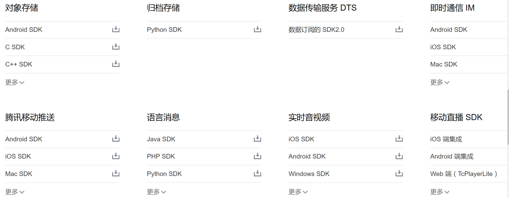
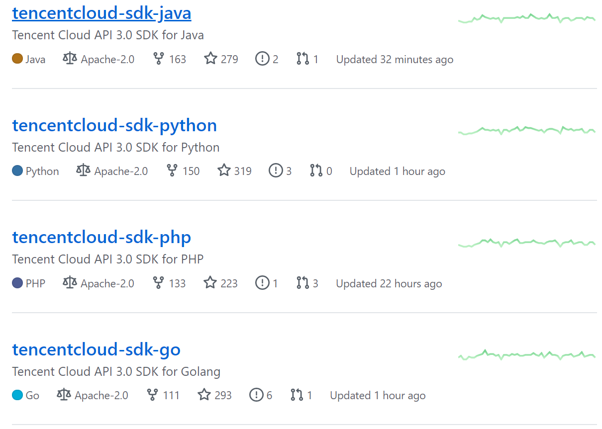
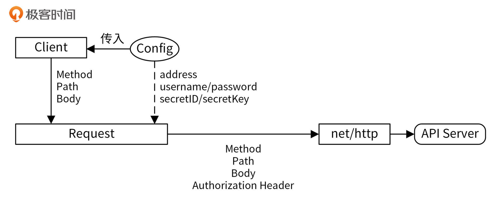
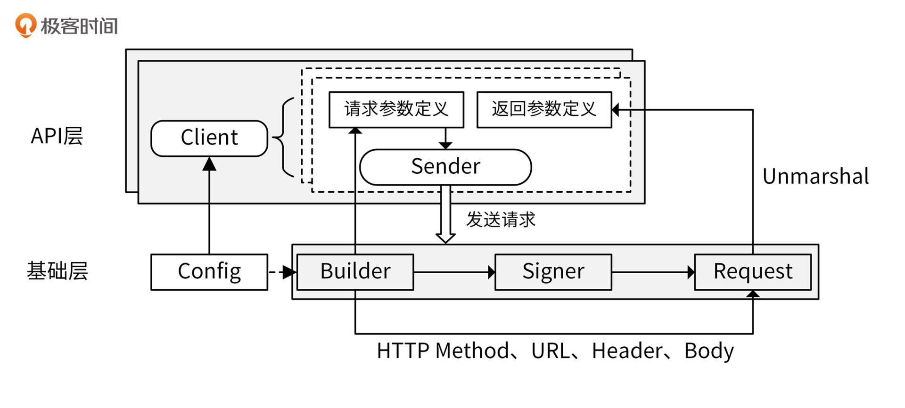
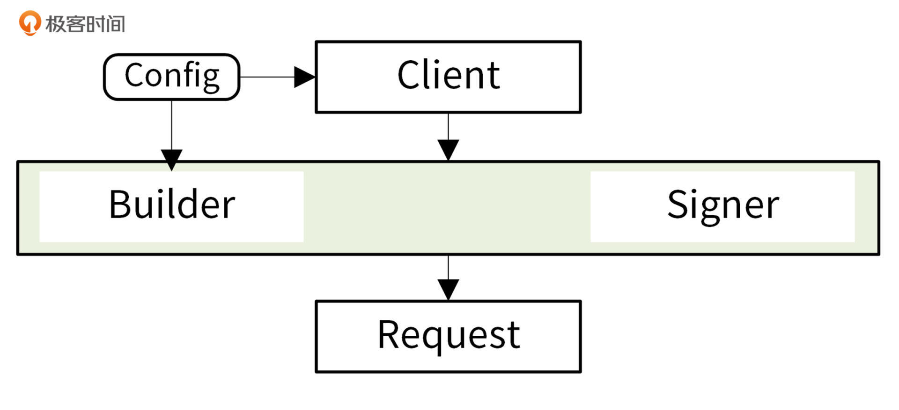

- 00 开篇词 从 0 开始搭建一个企业级 Go 应用.md.html
- 01 IAM系统概述：我们要实现什么样的 Go 项目？.md.html
- 02 环境准备：如何安装和配置一个基本的 Go 开发环境？.md.html
- 03 项目部署：如何快速部署 IAM 系统？.md.html
- 04 规范设计（上）：项目开发杂乱无章，如何规范？.md.html
- 05 规范设计（下）：commit 信息风格迥异、难以阅读，如何规范？.md.html
- 06 目录结构设计：如何组织一个可维护、可扩展的代码目录？.md.html
- 07 工作流设计：如何设计合理的多人开发模式？.md.html
- 08 研发流程设计（上）：如何设计 Go 项目的开发流程？.md.html
- 09 研发流程设计（下）：如何管理应用的生命周期？.md.html
- 10 设计方法：怎么写出优雅的 Go 项目？.md.html
- 11 设计模式：Go常用设计模式概述.md.html
- 12 API 风格（上）：如何设计RESTful API？.md.html
- 13 API 风格（下）：RPC API介绍.md.html
- 14 项目管理：如何编写高质量的Makefile？.md.html
- 15 研发流程实战：IAM项目是如何进行研发流程管理的？.md.html
- 16 代码检查：如何进行静态代码检查？.md.html
- 17 API 文档：如何生成 Swagger API 文档 ？.md.html
- 18 错误处理（上）：如何设计一套科学的错误码？.md.html
- 19 错误处理（下）：如何设计错误包？.md.html
- 20 日志处理（上）：如何设计日志包并记录日志？.md.html
- 21 日志处理（下）：手把手教你从 0 编写一个日志包.md.html
- 22 应用构建三剑客：Pflag、Viper、Cobra 核心功能介绍.md.html
- 23 应用构建实战：如何构建一个优秀的企业应用框架？.md.html
- 24 Web 服务：Web 服务核心功能有哪些，如何实现？.md.html
- 25 认证机制：应用程序如何进行访问认证？.md.html
- 26 IAM项目是如何设计和实现访问认证功能的？.md.html
- 27 权限模型：5大权限模型是如何进行资源授权的？.md.html
- 28 控制流（上）：通过iam-apiserver设计，看Web服务的构建.md.html
- 29 控制流（下）：iam-apiserver服务核心功能实现讲解.md.html
- 30 ORM：CURD 神器 GORM 包介绍及实战.md.html
- 31 数据流：通过iam-authz-server设计，看数据流服务的设计.md.html
- 32 数据处理：如何高效处理应用程序产生的数据？.md.html
- 33 SDK 设计（上）：如何设计出一个优秀的 Go SDK？.md.html
- 34 SDK 设计（下）：IAM项目Go SDK设计和实现.md.html
- 35 效率神器：如何设计和实现一个命令行客户端工具？.md.html
- 36 代码测试（上）：如何编写 Go 语言单元测试和性能测试用例？.md.html
- 37 代码测试（下）：Go 语言其他测试类型及 IAM 测试介绍.md.html
- 38 性能分析（上）：如何分析 Go 语言代码的性能？.md.html
- 39 性能分析（下）：API Server性能测试和调优实战.md.html
- 40 软件部署实战（上）：部署方案及负载均衡、高可用组件介绍.md.html
- 41 软件部署实战（中）：IAM 系统生产环境部署实战.md.html
- 42 软件部署实战（下）：IAM系统安全加固、水平扩缩容实战.md.html
- 43 技术演进（上）：虚拟化技术演进之路.md.html
- 44 技术演进（下）：软件架构和应用生命周期技术演进之路.md.html
- 45 基于Kubernetes的云原生架构设计.md.html
- 46 如何制作Docker镜像？.md.html
- 47 如何编写Kubernetes资源定义文件？.md.html
- 48 IAM 容器化部署实战.md.html
- 49 服务编排（上）：Helm服务编排基础知识.md.html
- 50 服务编排（下）：基于Helm的服务编排部署实战.md.html
- 51 基于 GitHub Actions 的 CI 实战.md.html
- 特别放送 Go Modules依赖包管理全讲.md.html
- 特别放送 Go Modules实战.md.html
- 特别放送 IAM排障指南.md.html
- 特别放送 分布式作业系统设计和实现.md.html
- 特别放送 给你一份Go项目中最常用的Makefile核心语法.md.html
- 特别放送 给你一份清晰、可直接套用的Go编码规范.md.html
- 直播加餐 如何从小白进阶成 Go 语言专家？.md.html
- 结束语 如何让自己的 Go 研发之路走得更远？.md.html
- 捐赠
33 SDK 设计（上）：如何设计出一个优秀的 Go SDK？
33 SDK 设计（上）：如何设计出一个优秀的 Go SDK？
你好，我是孔令飞。接下来的两讲，我们来看下如何设计和实现一个优秀的Go SDK。
后端服务通过API接口对外提供应用的功能，但是用户直接调用API接口，需要编写API接口调用的逻辑，并且需要构造入参和解析返回的数据包，使用起来效率低，而且有一定的开发工作量。
在实际的项目开发中，通常会提供对开发者更友好的SDK包，供客户端调用。很多大型服务在发布时都会伴随着SDK的发布，例如腾讯云很多产品都提供了SDK：

既然SDK如此重要，那么如何设计一个优秀的Go SDK呢？这一讲我就来详细介绍一下。
什么是SDK？
首先，我们来看下什么是SDK。
对于SDK（Software Development Kit，软件开发工具包），不同场景下有不同的解释。但是对于一个Go后端服务来说，SDK通常是指封装了Go后端服务API接口的软件包，里面通常包含了跟软件相关的库、文档、使用示例、封装好的API接口和工具。
调用SDK跟调用本地函数没有太大的区别，所以可以极大地提升开发者的开发效率和体验。SDK可以由服务提供者提供，也可以由其他组织或个人提供。为了鼓励开发者使用其系统或语言，SDK通常都是免费提供的。
通常，服务提供者会提供不同语言的SDK，比如针对Python开发者会提供Python版的SDK，针对Go开发者会提供Go版的SDK。一些比较专业的团队还会有SDK自动生成工具，可以根据API接口定义，自动生成不同语言的SDK。例如，Protocol Buffers的编译工具protoc，就可以基于Protobuf文件生成C++、Python、Java、JavaScript、PHP等语言版本的SDK。阿里云、腾讯云这些一线大厂，也可以基于API定义，生成不同编程语言的SDK。
SDK设计方法
那么，我们如何才能设计一个好的SDK呢？对于SDK，不同团队会有不同的设计方式，我调研了一些优秀SDK的实现，发现这些SDK有一些共同点。根据我的调研结果，结合我在实际开发中的经验，我总结出了一套SDK设计方法，接下来就分享给你。
如何给SDK命名？
在讲设计方法之前，我先来介绍两个重要的知识点：SDK的命名方式和SDK的目录结构。
SDK的名字目前没有统一的规范，但比较常见的命名方式是 xxx-sdk-go / xxx-sdk-python / xxx-sdk-java 。其中， xxx 可以是项目名或者组织名，例如腾讯云在GitHub上的组织名为tencentcloud，那它的SDK命名如下图所示：

SDK的目录结构
不同项目SDK的目录结构也不相同，但一般需要包含下面这些文件或目录。目录名可能会有所不同，但目录功能是类似的。
- README.md.html：SDK的帮助文档，里面包含了安装、配置和使用SDK的方法。
- examples/sample/：SDK的使用示例。
- sdk/：SDK共享的包，里面封装了最基础的通信功能。如果是HTTP服务，基本都是基于
net/http包进行封装。 - api：如果
xxx-sdk-go只是为某一个服务提供SDK，就可以把该服务的所有API接口封装代码存放在api目录下。 - services/{iam, tms} ：如果
xxx-sdk-go中，xxx是一个组织，那么这个SDK很可能会集成该组织中很多服务的API，就可以把某类服务的API接口封装代码存放在services/<服务名>下，例如AWS的Go SDK。
一个典型的目录结构如下：
├── examples # 示例代码存放目录
│ └── authz.go
├── README.md.html # SDK使用文档
├── sdk # 公共包，封装了SDK配置、API请求、认证等代码
│ ├── client.go
│ ├── config.go
│ ├── credential.go
│ └── ...
└── services # API封装
├── common
│ └── model
├── iam # iam服务的API接口
│ ├── authz.go
│ ├── client.go
│ └── ...
└── tms # tms服务的API接口
SDK设计方法
SDK的设计方法如下图所示：

我们可以通过Config配置创建客户端Client，例如 func NewClient(config sdk.Config) (Client, error)，配置中可以指定下面的信息。
- 服务的后端地址：服务的后端地址可以通过配置文件来配置，也可以直接固化在SDK中，推荐后端服务地址可通过配置文件配置。
- 认证信息：最常用的认证方式是通过密钥认证，也有一些是通过用户名和密码认证。
- 其他配置：例如超时时间、重试次数、缓存时间等。
创建的Client是一个结构体或者Go interface。这里我建议你使用interface类型，这样可以将定义和具体实现解耦。Client具有一些方法，例如 CreateUser、DeleteUser等，每一个方法对应一个API接口，下面是一个Client定义：
type Client struct {
client *sdk.Request
}
func (c *Client) CreateUser(req *CreateUserRequest) (*CreateUserResponse, error) {
// normal code
resp := &CreateUserResponse{}
err := c.client.Send(req, resp)
return resp, err
}
调用 client.CreateUser(req) 会执行HTTP请求，在 req 中可以指定HTTP请求的方法Method、路径Path和请求Body。 CreateUser 函数中，会调用 c.client.Send(req) 执行具体的HTTP请求。
c.client 是 *Request 类型的变量， *Request 类型的变量具有一些方法，可以根据传入的请求参数 req 和 config 配置构造出请求路径、认证头和请求Body，并调用 net/http 包完成最终的HTTP请求，最后将返回结果Unmarshal到传入的 resp 结构体中。
根据我的调研，目前有两种SDK设计方式可供参考，一种是各大公有云厂商采用的SDK设计方式，一种是Kubernetes client-go的设计方式。IAM项目分别实现了这两种SDK设计方式，但我还是更倾向于对外提供client-go方式的SDK，我会在下一讲详细介绍它。这两种设计方式的设计思路跟上面介绍的是一致的。
公有云厂商采用的SDK设计方式
这里，我先来简单介绍下公有云厂商采用的SDK设计模式。SDK架构如下图所示：

SDK框架分为两层，分别是API层和基础层。API层主要用来构建客户端实例，并调用客户端实例提供的方法来完成API请求，每一个方法对应一个API接口。API层最终会调用基础层提供的能力，来完成REST API请求。基础层通过依次执行构建请求参数（Builder）、签发并添加认证头（Signer）、执行HTTP请求（Request）三大步骤，来完成具体的REST API请求。
为了让你更好地理解公有云SDK的设计方式，接下来我会结合一些真实的代码，给你讲解API层和基础层的具体设计，SDK代码见medu-sdk-go。
API层：创建客户端实例
客户端在使用服务A的SDK时，首先需要根据Config配置创建一个服务A的客户端Client，Client实际上是一个struct，定义如下：
type Client struct {
sdk.Client
}
在创建客户端时，需要传入认证（例如密钥、用户名/密码）、后端服务地址等配置信息。例如，可以通过NewClientWithSecret方法来构建一个带密钥对的客户端：
func NewClientWithSecret(secretID, secretKey string) (client *Client, err error) {
client = &Client{}
config := sdk.NewConfig().WithEndpoint(defaultEndpoint)
client.Init(serviceName).WithSecret(secretID, secretKey).WithConfig(config)
return
}
这里要注意，上面创建客户端时，传入的密钥对最终会在基础层中被使用，用来签发JWT Token。
Client有多个方法（Sender），例如 Authz等，每个方法代表一个API接口。Sender方法会接收AuthzRequest等结构体类型的指针作为输入参数。我们可以调用 client.Authz(req) 来执行REST API调用。可以在 client.Authz 方法中添加一些业务逻辑处理。client.Authz 代码如下：
type AuthzRequest struct {
*request.BaseRequest
Resource *string `json:"resource"`
Action *string `json:"action"`
Subject *string `json:"subject"`
Context *ladon.Context
}
func (c *Client) Authz(req *AuthzRequest) (resp *AuthzResponse, err error) {
if req == nil {
req = NewAuthzRequest()
}
resp = NewAuthzResponse()
err = c.Send(req, resp)
return
}
请求结构体中的字段都是指针类型的，使用指针的好处是可以判断入参是否有被指定，如果req.Subject == nil 就说明传参中没有Subject参数，如果req.Subject != nil就说明参数中有传Subject参数。根据某个参数是否被传入，执行不同的业务逻辑，这在Go API接口开发中非常常见。
另外，因为Client通过匿名的方式继承了基础层中的Client：
type Client struct {
sdk.Client
}
所以，API层创建的Client最终可以直接调用基础层中的Client提供的Send(req, resp) 方法，来执行RESTful API调用，并将结果保存在 resp 中。
为了方便和API层的Client进行区分，我下面统一将基础层中的Client称为sdk.Client。
最后，一个完整的客户端调用示例代码如下：
package main
import (
"fmt"
"github.com/ory/ladon"
"github.com/marmotedu/medu-sdk-go/sdk"
iam "github.com/marmotedu/medu-sdk-go/services/iam/authz"
)
func main() {
client, _ := iam.NewClientWithSecret("XhbY3aCrfjdYcP1OFJRu9xcno8JzSbUIvGE2", "bfJRvlFwsoW9L30DlG87BBW0arJamSeK")
req := iam.NewAuthzRequest()
req.Resource = sdk.String("resources:articles:ladon-introduction")
req.Action = sdk.String("delete")
req.Subject = sdk.String("users:peter")
ctx := ladon.Context(map[string]interface{}{"remoteIPAddress": "192.168.0.5"})
req.Context = &ctx
resp, err := client.Authz(req)
if err != nil {
fmt.Println("err1", err)
return
}
fmt.Printf("get response body: `%s`\n", resp.String())
fmt.Printf("allowed: %v\n", resp.Allowed)
}
基础层：构建并执行HTTP请求
上面我们创建了客户端实例，并调用了它的 Send 方法来完成最终的HTTP请求。这里，我们来看下Send方法具体是如何构建HTTP请求的。
sdk.Client通过Send方法，完成最终的API调用，代码如下：
func (c *Client) Send(req request.Request, resp response.Response) error {
method := req.GetMethod()
builder := GetParameterBuilder(method, c.Logger)
jsonReq, _ := json.Marshal(req)
encodedUrl, err := builder.BuildURL(req.GetURL(), jsonReq)
if err != nil {
return err
}
endPoint := c.Config.Endpoint
if endPoint == "" {
endPoint = fmt.Sprintf("%s/%s", defaultEndpoint, c.ServiceName)
}
reqUrl := fmt.Sprintf("%s://%s/%s%s", c.Config.Scheme, endPoint, req.GetVersion(), encodedUrl)
body, err := builder.BuildBody(jsonReq)
if err != nil {
return err
}
sign := func(r *http.Request) error {
signer := NewSigner(c.signMethod, c.Credential, c.Logger)
_ = signer.Sign(c.ServiceName, r, strings.NewReader(body))
return err
}
rawResponse, err := c.doSend(method, reqUrl, body, req.GetHeaders(), sign)
if err != nil {
return err
}
return response.ParseFromHttpResponse(rawResponse, resp)
}
上面的代码大体上可以分为四个步骤。
第一步，Builder：构建请求参数。
根据传入的AuthzRequest和客户端配置Config，构造HTTP请求参数，包括请求路径和请求Body。
接下来，我们来看下如何构造HTTP请求参数。
- HTTP请求路径构建
在创建客户端时，我们通过NewAuthzRequest函数创建了 /v1/authz REST API接口请求结构体AuthzRequest，代码如下：
func NewAuthzRequest() (req *AuthzRequest) {
req = &AuthzRequest{
BaseRequest: &request.BaseRequest{
URL: "/authz",
Method: "POST",
Header: nil,
Version: "v1",
},
}
return
}
可以看到，我们创建的 req 中包含了API版本（Version）、API路径（URL）和请求方法（Method）。这样，我们就可以在Send方法中，构建出请求路径：
endPoint := c.Config.Endpoint
if endPoint == "" {
endPoint = fmt.Sprintf("%s/%s", defaultEndpoint, c.ServiceName)
}
reqUrl := fmt.Sprintf("%s://%s/%s%s", c.Config.Scheme, endPoint, req.GetVersion(), encodedUrl)
上述代码中，c.Config.Scheme=http/https、endPoint=iam.api.marmotedu.com:8080、req.GetVersion()=v1和encodedUrl，我们可以认为它们等于/authz。所以，最终构建出的请求路径为http://iam.api.marmotedu.com:8080/v1/authz 。
- HTTP请求Body构建
在BuildBody方法中构建请求Body。BuildBody会将 req Marshal成JSON格式的string。HTTP请求会以该字符串作为Body参数。
第二步，Signer：签发并添加认证头。
访问IAM的API接口需要进行认证，所以在发送HTTP请求之前，还需要给HTTP请求添加认证Header。
medu-sdk-go 代码提供了JWT和HMAC两种认证方式，最终采用了JWT认证方式。JWT认证签发方法为Sign，代码如下：
func (v1 SignatureV1) Sign(serviceName string, r *http.Request, body io.ReadSeeker) http.Header {
tokenString := auth.Sign(v1.Credentials.SecretID, v1.Credentials.SecretKey, "medu-sdk-go", serviceName+".marmotedu.com")
r.Header.Set("Authorization", fmt.Sprintf("Bearer %s", tokenString))
return r.Header
}
auth.Sign 方法根据SecretID和SecretKey签发JWT Token。
接下来，我们就可以调用doSend方法来执行HTTP请求了。调用代码如下：
rawResponse, err := c.doSend(method, reqUrl, body, req.GetHeaders(), sign)
if err != nil {
return err
}
可以看到，我们传入了HTTP请求方法 method 、HTTP请求URL reqUrl 、HTTP请求Body body，以及用来签发JWT Token的 sign 方法。我们在调用 NewAuthzRequest 创建 req 时，指定了HTTP Method，所以这里的 method := req.GetMethod() 、reqUrl和请求Body都是通过Builder来构建的。
第三步，Request：执行HTTP请求。
调用doSend方法执行HTTP请求，doSend通过调用 net/http 包提供的 http.NewRequest 方法来发送HTTP请求，执行完HTTP请求后，会返回 *http.Response 类型的Response。代码如下：
func (c *Client) doSend(method, url, data string, header map[string]string, sign SignFunc) (*http.Response, error) {
client := &http.Client{Timeout: c.Config.Timeout}
req, err := http.NewRequest(method, url, strings.NewReader(data))
if err != nil {
c.Logger.Errorf("%s", err.Error())
return nil, err
}
c.setHeader(req, header)
err = sign(req)
if err != nil {
return nil, err
}
return client.Do(req)
}
第四步，处理HTTP请求返回结果。
调用doSend方法返回 *http.Response 类型的Response后，Send方法会调用ParseFromHttpResponse函数来处理HTTP Response，ParseFromHttpResponse函数代码如下：
func ParseFromHttpResponse(rawResponse *http.Response, response Response) error {
defer rawResponse.Body.Close()
body, err := ioutil.ReadAll(rawResponse.Body)
if err != nil {
return err
}
if rawResponse.StatusCode != 200 {
return fmt.Errorf("request fail with status: %s, with body: %s", rawResponse.Status, body)
}
if err := response.ParseErrorFromHTTPResponse(body); err != nil {
return err
}
return json.Unmarshal(body, &response)
}
可以看到，在ParseFromHttpResponse函数中，会先判断HTTP Response中的StatusCode是否为200，如果不是200，则会报错。如果是200，会调用传入的resp变量提供的ParseErrorFromHTTPResponse方法，来将HTTP Response的Body Unmarshal到resp变量中。-
通过以上四步，SDK调用方调用了API，并获得了API的返回结果 resp 。
下面这些公有云厂商的SDK采用了此设计模式：
- 腾讯云SDK：tencentcloud-sdk-go。
- AWS SDK：aws-sdk-go。
- 阿里云SDK：alibaba-cloud-sdk-go。
- 京东云SDK：jdcloud-sdk-go。
- Ucloud SDK：ucloud-sdk-go。
IAM公有云方式的SDK实现为 medu-sdk-go。
此外，IAM还设计并实现了Kubernetes client-go方式的Go SDK：marmotedu-sdk-go，marmotedu-sdk-go也是IAM Go SDK所采用的SDK。下一讲中，我会具体介绍marmotedu-sdk-go的设计和实现。
总结
这一讲，我主要介绍了如何设计一个优秀的Go SDK。通过提供SDK，可以提高API调用效率，减少API调用难度，所以大型应用通常都会提供SDK。不同团队有不同的SDK设计方法，但目前比较好的实现是公有云厂商采用的SDK设计方式。
公有云厂商的SDK设计方式中，SDK按调用顺序从上到下可以分为3个模块，如下图所示：

Client构造SDK客户端，在构造客户端时，会创建请求参数 req ， req 中会指定API版本、HTTP请求方法、API请求路径等信息。
Client会请求Builder和Signer来构建HTTP请求的各项参数：HTTP请求方法、HTTP请求路径、HTTP认证头、HTTP请求Body。Builder和Signer是根据 req 配置来构造这些HTTP请求参数的。
构造完成之后，会请求Request模块，Request模块通过调用 net/http 包，来执行HTTP请求，并返回请求结果。
课后练习
- 思考下，如何实现可以支持多个API版本的SDK包，代码如何实现？
- 这一讲介绍了一种SDK实现方式，在你的Go开发生涯中，还有没有一些更好的SDK实现方法？欢迎在留言区分享。
期待你在留言区与我交流讨论，我们下一讲见。
© 2019 - 2023 Liangliang Lee. Powered by gin and hexo-theme-book.